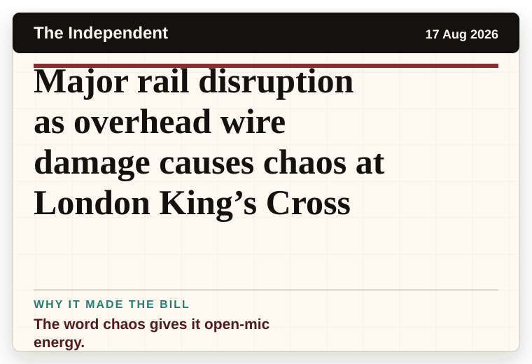
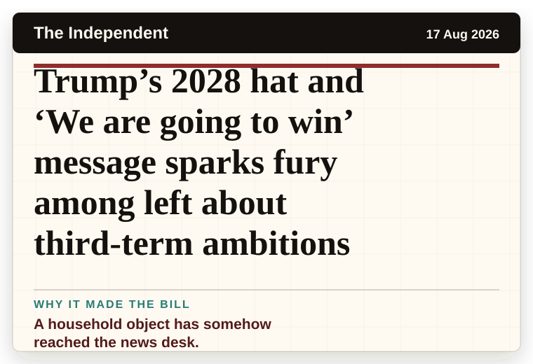
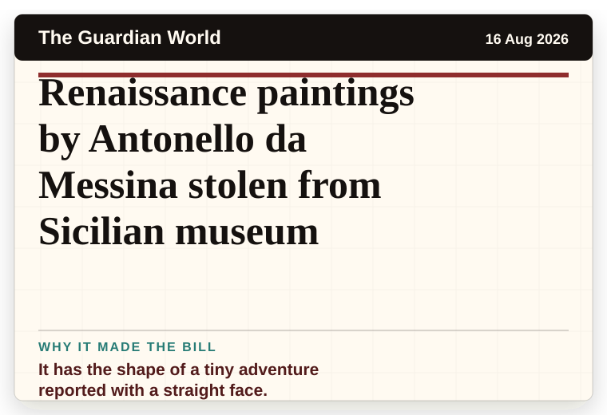
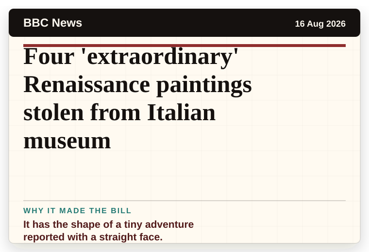
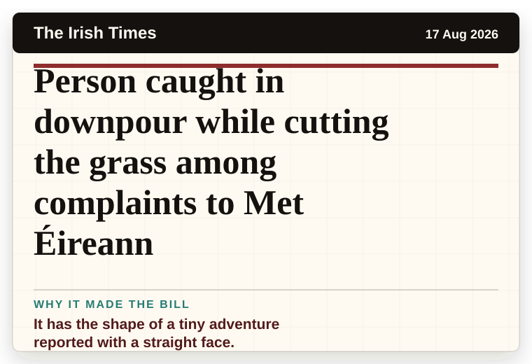
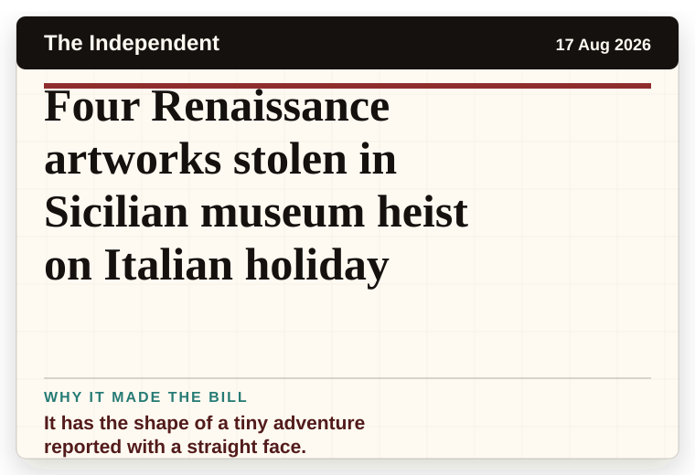
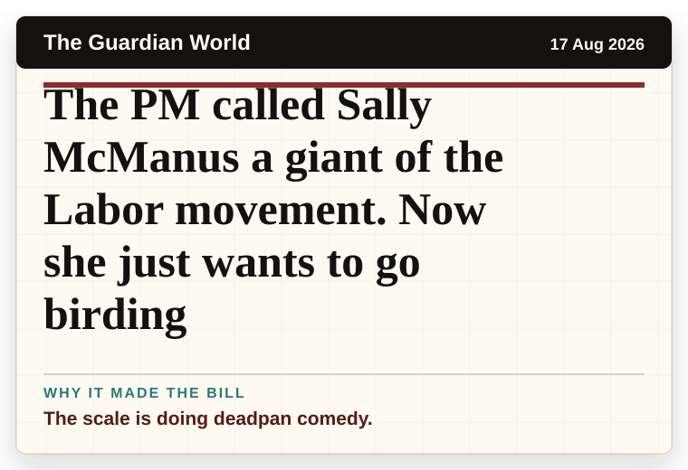

NT News
Australia
‘Just slept through all that’: Handler’s bizarre Roe v Wade take raises eyebrows
The headline is already trying not to laugh.
The latest daily picks, linked back to the original sources. Search the room, pick a source, or follow a headline out to the full story.
Record updated: 17 Aug 2026, 07:38 AM AEST
Showing 14 headline candidates from the refresh run completed on 17 Aug 2026, 07:38 AM AEST.
The headline is already trying not to laugh.

A very ordinary object has wandered into serious news.

The headline is already trying not to laugh.

A wonderfully specific detail has taken centre stage.

A very ordinary object has wandered into serious news.

It has the shape of a tiny adventure reported with a straight face.

The question mark makes it feel like the host has paused for the room.

The word chaos gives it open-mic energy.

A household object has somehow reached the news desk.

It has the shape of a tiny adventure reported with a straight face.

It has the shape of a tiny adventure reported with a straight face.

It has the shape of a tiny adventure reported with a straight face.

It has the shape of a tiny adventure reported with a straight face.

The scale is doing deadpan comedy.